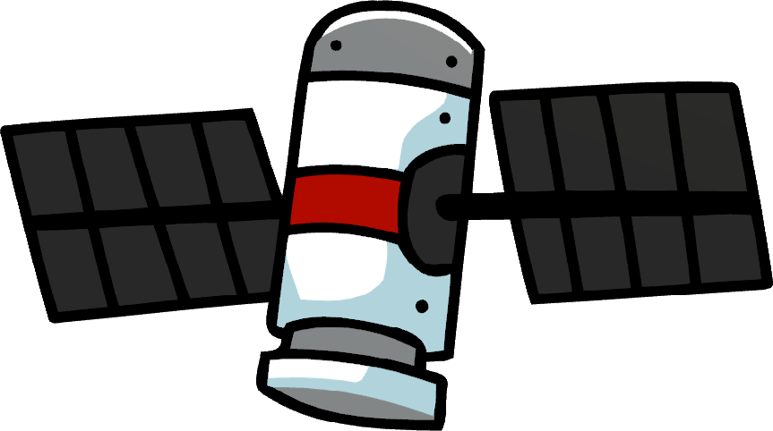

<div class="container-fluid">
  <div class="card border-primary border-2 mb-3" style="max-width: 960px">
    <div class="row g-0">
      <div class="col-4 row align-items-center p-3">
        
        
      </div>
      <div class="col-8">
        <div class="card-body">
          <div class="row justify-content-between">
            <div class="col">
              <h5 class="card-title text-start">{{ satname }}</h5>
            </div>
            <div class="col-3">
              <h5 class="card-title text-end">{{ satId }}</h5>
            </div>
          </div>

          <p class="card-text m-0">Lat: {{ latitude }}</p>
          <p class="card-text m-0">Lng: {{ longitude }}</p>
          <p class="card-text m-0">Alt: {{ altitude + "KM" }}</p>
          <p class="card-text m-0 mt-2">Azimuth: {{ azimuth }}</p>
          <p class="card-text m-0">Elevation: {{ elevation }}</p>
          <p class="card-text m-0 mt-2">
            Right Accention: {{ rightAccention }}
          </p>
          <p class="card-text m-0">Declination: {{ declination }}</p>

          <p class="cart-text m-0">Favorites: {{favorites}}</p>
          
          <button class="btn btn-secondary">Fav</button>

          <p class="card-text text-end">
            <small class="text-muted">{{
              getTimestampMillis() | date: "medium"
            }}</small>
          </p>
          <button class="btn btn-primary" (click)="refreshData()">
            Refresh
          </button>
          <button class="btn btn-primary mx-4" (click)="toggleSidePanelEvent()">
            Comments
          </button>
        </div>
      </div>
    </div>
  </div>
</div>

<!-- Doesn't Work in Angular-->
<!-- <script type="text/javascript" src="https://www.n2yo.com/js/widget-tracker.js"></script> -->
